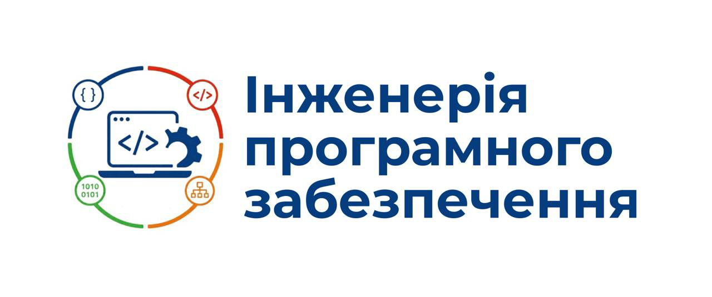
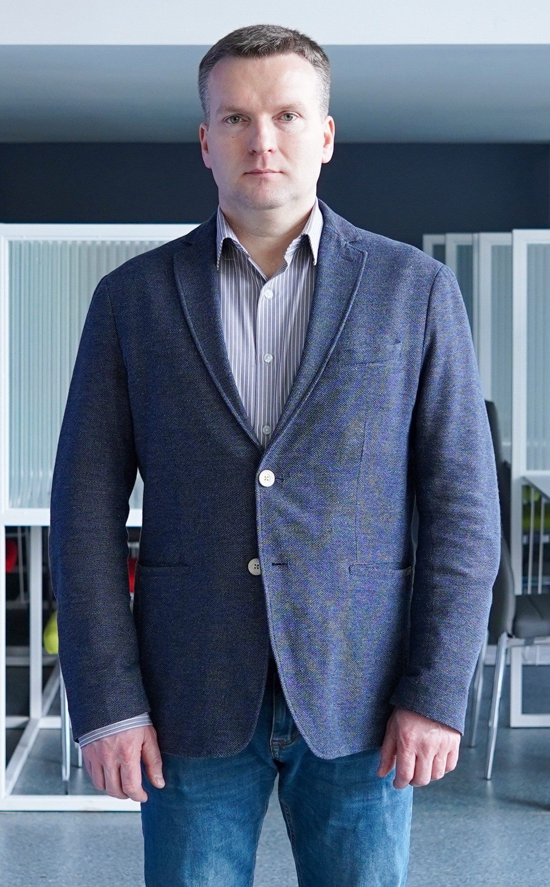
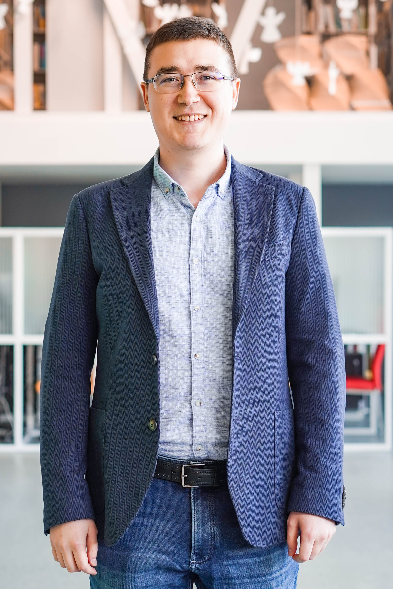
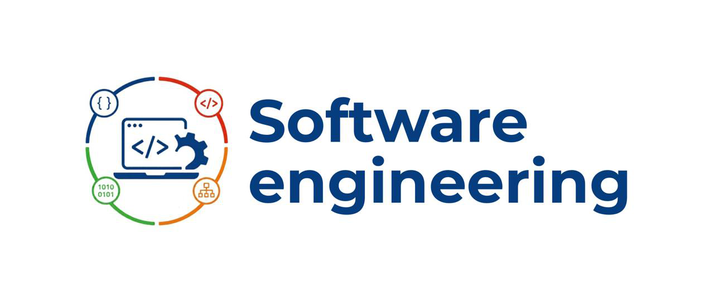

Державний університет «Житомирська політехніка»
Факультет інформаційно-комп'ютерних технологій
Засідання кафедри інженерії програмного забезпечення
12 серпня 2026 року

Кадрові призначення

Савіцький
Роман Святославович
Роман Святославович
Новий заступник завідувача кафедри
Вітаємо колег!

Антонюк
Дмитро Сергійович
Дмитро Сергійович
доктор наук
Савіцький
Роман Святославович
Роман Святославович
доктор філософії

Фант
Микола Олександрович
Микола Олександрович
доцент
Новий портал університету
З 1 вересня — переїзд усіх матеріалів та роботи на новий портал
Скануйте QR-код, щоб перейти на портал
Важливі дати
21.08
Фінальна подача документів на конкурс
25–26.08
Засідання кафедри по факту подачі документів на конкурс
28.08 · 10:00
Збори трудового колективу університету
28.08 · 11:00
Вчена рада університету
31.08
Свято першокурсника
З 01.09
Нульовий тиждень
Реклама спеціальності

Реклама та сторінки в соц. мережах
Дунєв Сергій
Дунєв Сергій
Новини та ведення обліку новин
Талавер Олег
Талавер Олег
⚠️ Важливо створювати і поширювати новини
Нова освітня програма
Інженерія сучасних
інтелектуальних систем
інтелектуальних систем
Тут буде логотип
⚠️ Пропонуйте предмети та наповнення програми (вересень 2026)
Оновлення робочих програм
З 1 вересня оновлюємо всі робочі програми
- РП будуть створюватись через КОНСТРУКТОР РП
- Перевірити на відсутність російських джерел
- Відбуватиметься перевірка на генерацію ШІ та відповідність дисципліні
- Уніфікація назв програмних результатів навчання та компетентностей
- За можливості додаємо АІ (ШІ) в кожен курс — 1–2 теми
⚠️ Кожен ст. викладач і вище має читати хоча б ОДИН
лекційний курс
Розподіл обов'язків
| ПІБ | Постійні обов'язки |
|---|---|
| Вакалюк Тетяна Анатоліївна | КПІ виконання контрактів, навантаження, перевірка п.38, навчальні плани, ризики, журнал, семінар Scopus |
| Єфремов Юрій Миколайович | Дипломні роботи |
| Фант Микола Олександрович | |
| Антонюк Дмитро Сергійович | Спонсорування та проведення відкритих лекцій |
| Чижмотря Олексій Володимирович | План та звіт роботи кафедри, опитування/анкетування, опрацювання результатів |
| Чижмотря Олена Геннадіївна | Створення сторінок на Learn, секретар конференції |
| Толстой Ігор Анатолійович | SEO сайту університету |
| Локтікова Тамара Миколаївна | Документи кафедри |
| Власенко Олег Васильович | Комунікація зі студентами, олімпіадний рух |
| Варганова Діна Олександрівна | Звіт з науки |
| Кушнір Надія Олександрівна | Протоколи засідань кафедри (з 1 вересня) |
| ПІБ | Постійні обов'язки |
|---|---|
| Дмитренко Ірина Анатоліївна | Доробити протоколи і передати Кушнір Н.О. до 30 серпня |
| Лисогор Юрій Іванович | Взаємовідвідування |
| Савіцький Роман Святославович | Робота по боргам, перевірка робочих програм, навчальні плани, ризики |
| Концидайло Андрій Михайлович | Секретар конференції |
| Ковтун Валентин Віталійович | |
| Талавер Олег Володимирович | Оновлення новин для акредитації (заходи), введення новин |
| Годлевський Юрій Олександрович | Проєктна діяльність |
| Дунєв Сергій Сергійович | Реклама |
| Піонтківський Владислав Ігорович | Секретар конференції |
| Нерода Сергій Іванович | Профорієнтація |
| Лімінович Іван Дмитрович | Профорієнтація |
| Громський Олександр Олександрович | Профорієнтація |
Гаранти відповідають за освітні програми, навчальні плани і
зворотній зв'язок щодо обговорення змісту програм, а також за весь акредитаційний процес
Проєкт наказу про нормування наукової діяльності
Приклад розрахунку годин (наукова діяльність)
| Вид діяльності | Кількість авторів |
Кількість публ. |
Годин за 1 од. |
Всього |
|---|---|---|---|---|
| Захист докторської | 1 | 250 | 250 | |
| Скопус (конференційний) | 5 | 2 | 350 | 140 |
| Керування аспірантами | 2 | 50 | 100 | |
| Фахова | 2 | 1 | 100 | 50 |
| Фахова | 5 | 2 | 100 | 40 |
| Розділ закорд. монографії | 8 | 1 | 30 | 3,75 |
| Член редколегії | 10 | 10 | ||
| Тези | 5 | 1 | 5 | 1 |
| Феїр-дані | 2 | 1 | 50 | 25 |
| Всього | 619,75 | |||
| Норма | 600 | |||
Державний університет «Житомирська політехніка»
Факультет інформаційно-комп'ютерних технологій
Засідання кафедри інженерії програмного забезпечення
12 серпня 2026 року